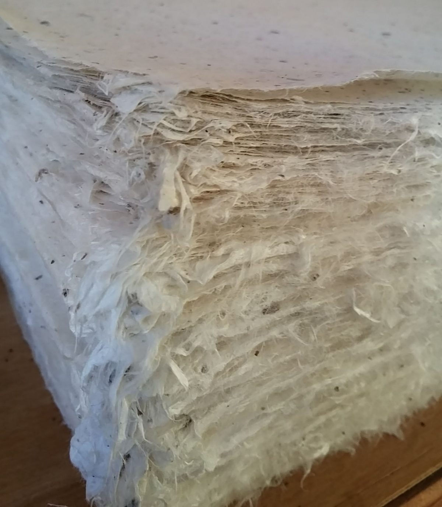
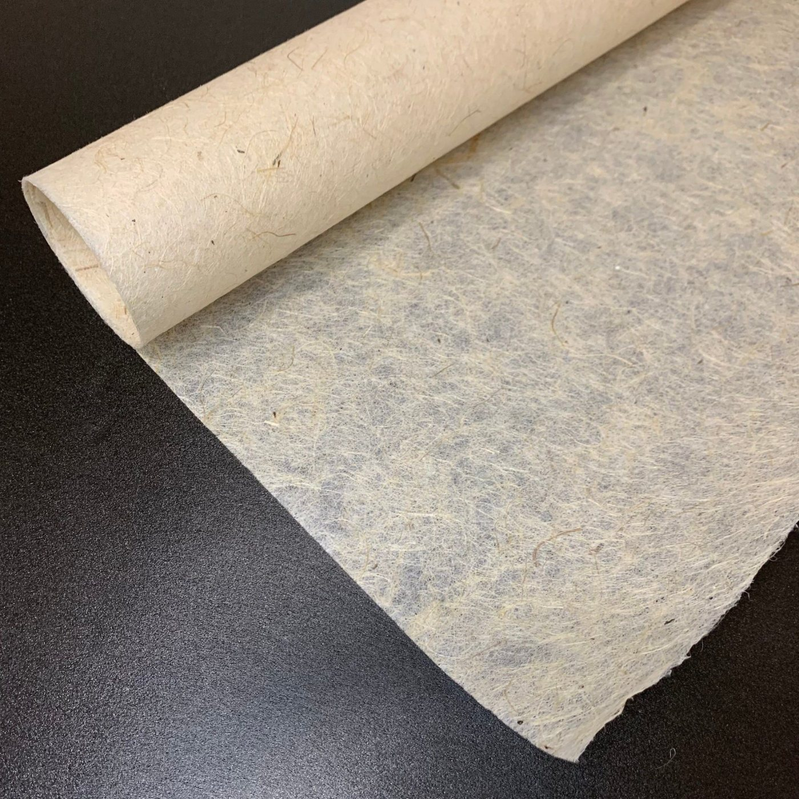

07 / 13
한지 표구
한지 표구는 화선지에 쓴 글씨와 그림을 배접해 족자·액자·병풍으로 꾸미는 일입니다.
- 배접 반절
- 30,000원 · 건조 10일
- 오늘 맡기면 배접 완성
- 10월 19일(월)
요금과 기간
건조 기간은 달력 날수다. 끝나는 날이 일요일이면 다음 날 찾는다.
배접
- 배접 반절35 × 135 cm · 화선지 뒤에 한지를 한 겹 붙여 판판하게 편다30,000원10일 · 10월 19일(월)
- 배접 전지70 × 135 cm · 전지 한 장을 한 번에 붙인다50,000원10일 · 10월 19일(월)
- 다시 배접반절 기준 · 옛 배접지를 물로 불려 떼고 새로 붙인다80,000원21일 · 10월 30일(금)
족자
- 족자 반절35 × 135 cm · 비단 테를 두르고 위아래에 나무 축을 단다90,000원14일 · 10월 23일(금)
- 족자 전지70 × 135 cm · 축머리는 소나무와 오동 가운데 고른다140,000원14일 · 10월 23일(금)
액자 표구
- 반절 가로 액자135 × 35 cm · 배접한 작품에 비단 띠를 두르고 오동 평 40으로 짠다160,000원14일 · 10월 23일(금)
- 전지 액자70 × 135 cm · 아크릴을 넣는다. 유리는 무게 때문에 넣지 않는다230,000원14일 · 10월 23일(금)
병풍
- 가리개 2폭폭당 45 × 170 cm · 두 폭을 경첩으로 잇는다380,000원21일 · 10월 30일(금)
- 병풍 8폭폭당 45 × 170 cm · 여덟 폭을 종이 경첩으로 이어 접는다1,200,000원30일 · 11월 9일(월)
- 병풍 10폭폭당 45 × 170 cm · 열 폭. 펼친 길이는 약 4.5 m다1,500,000원30일 · 11월 9일(월)
배접
배접褙接은 글씨나 그림을 그린 얇은 화선지 뒤에 한지를 덧붙여 판판하게 펴는 일이다.
풀은 밀가루를 삭혀 쑨 풀을 묽게 쓴다. 붙인 뒤 나무판에 붙여 말리며, 열흘 남짓 걸린다.
화선지 전지는 70 × 135 cm이고, 반을 자른 반절은 35 × 135 cm다.
